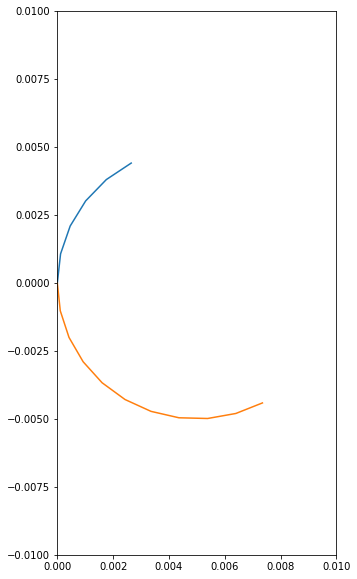
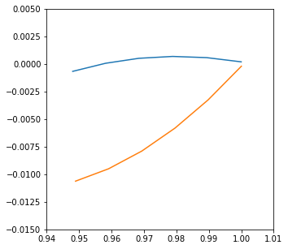
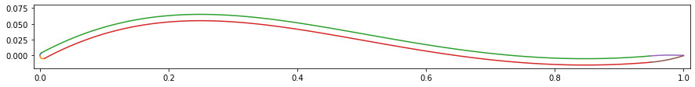
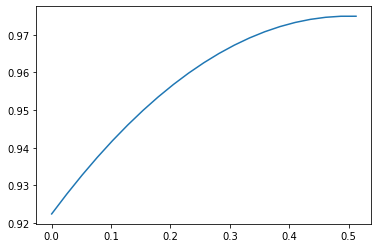

XFoil Testing
XFoil Testing¶
In this note, we will recreate the research of Michael Reid who explored thin airfoils with a reflex trailing edge using XFoil. The first part of this effort will involve recreating MATLAB code in Python.
import mmtime_helper
from mmtime.ReflexAirfoil import ReflexAirfoil
ra = ReflexAirfoil(6, 25, 1, 85, 1)
from matplotlib import pyplot as plt
xtl,ytl,xbl,ybl = ra.getLE()
plt.figure(figsize=(5,10))
plt.xlim(0, 0.01)
plt.ylim(-0.01, 0.01)
plt.plot(xtl,ytl)
plt.plot(xbl,ybl)
plt.show()

xtt,ytt,xbt,ybt = ra.getTE()
plt.figure(figsize=(5,5))
plt.xlim(0.94, 1.01)
plt.ylim(-0.015, 0.005)
plt.plot(xtt,ytt)
plt.plot(xbt,ybt)
plt.show()

import math
xt,yt,xb,yb = ra.getCamberPoints()
plt.figure(figsize=(15,1.5))
plt.xlim(-0.01, 1.01)
plt.ylim(-0.02, 0.08)
plt.plot(xtl,ytl)
plt.plot(xbl,ybl)
plt.plot(xt,yt)
plt.plot(xb,yb)
plt.plot(xtt,ytt)
plt.plot(xbt,ybt)
plt.show()

nx = 20
t = 0.05# thickness
c = 1.0 - t/2 # chord ( subtract round LE)
r = c**2/(8.0*t) + t/2
theta = 2*math.atan(2*t/c)
r
2.4015625
theta * 180/math.pi
11.712027170857915
r * math.sin(theta)
0.4875
r - r * math.cos(theta)
0.04999999999999982
dx = (1.0-c/2)/nx
xp = []
yp = []
xc = 0.5
yc = c - r
x = 0
for i in range(nx + 1):
y = yc + math.sqrt(r**2 - (x - xc)**2)
xp.append(x)
yp.append(y)
x += dx
print(r)
2.4015625
#plt.figure(figsize=(15,1.5))
#plt.xlim(-0.01, 1.01)
#plt.ylim(-0.02, 0.08)
plt.plot(xp,yp)
plt.show()

from mmtime.ArcAirfoil import ArcAirfoil
aa = ArcAirfoil(5,1)
xtl,ytl,xbl,ybl = aa.getLE()
xtt,ytt,xbt,ybt = aa.getTE()
xt,yt,xb,yb = aa.getCamberPoints()
ERROR:root:Internal Python error in the inspect module.
Below is the traceback from this internal error.
Traceback (most recent call last):
File "/Users/rblack/_dev/nffs-symposium/live-2022/.direnv/python-3.10.2/lib/python3.10/site-packages/IPython/core/interactiveshell.py", line 3457, in run_code
exec(code_obj, self.user_global_ns, self.user_ns)
File "/var/folders/t9/hc5s57h95tj3rsp4qvk61m8m0000gn/T/ipykernel_36238/1603030044.py", line 1, in <module>
xtl,ytl,xbl,ybl = aa.getLE()
AttributeError: 'ArcAirfoil' object has no attribute 'getLE'
During handling of the above exception, another exception occurred:
Traceback (most recent call last):
File "/Users/rblack/_dev/nffs-symposium/live-2022/.direnv/python-3.10.2/lib/python3.10/site-packages/IPython/core/interactiveshell.py", line 2077, in showtraceback
stb = value._render_traceback_()
AttributeError: 'AttributeError' object has no attribute '_render_traceback_'
During handling of the above exception, another exception occurred:
Traceback (most recent call last):
File "/Users/rblack/_dev/nffs-symposium/live-2022/.direnv/python-3.10.2/lib/python3.10/site-packages/IPython/core/ultratb.py", line 1101, in get_records
return _fixed_getinnerframes(etb, number_of_lines_of_context, tb_offset)
File "/Users/rblack/_dev/nffs-symposium/live-2022/.direnv/python-3.10.2/lib/python3.10/site-packages/IPython/core/ultratb.py", line 248, in wrapped
return f(*args, **kwargs)
File "/Users/rblack/_dev/nffs-symposium/live-2022/.direnv/python-3.10.2/lib/python3.10/site-packages/IPython/core/ultratb.py", line 281, in _fixed_getinnerframes
records = fix_frame_records_filenames(inspect.getinnerframes(etb, context))
File "/usr/local/Cellar/python@3.10/3.10.2/Frameworks/Python.framework/Versions/3.10/lib/python3.10/inspect.py", line 1667, in getinnerframes
frameinfo = (tb.tb_frame,) + getframeinfo(tb, context)
File "/usr/local/Cellar/python@3.10/3.10.2/Frameworks/Python.framework/Versions/3.10/lib/python3.10/inspect.py", line 1625, in getframeinfo
filename = getsourcefile(frame) or getfile(frame)
File "/usr/local/Cellar/python@3.10/3.10.2/Frameworks/Python.framework/Versions/3.10/lib/python3.10/inspect.py", line 829, in getsourcefile
module = getmodule(object, filename)
File "/usr/local/Cellar/python@3.10/3.10.2/Frameworks/Python.framework/Versions/3.10/lib/python3.10/inspect.py", line 875, in getmodule
f = getabsfile(module)
File "/usr/local/Cellar/python@3.10/3.10.2/Frameworks/Python.framework/Versions/3.10/lib/python3.10/inspect.py", line 844, in getabsfile
_filename = getsourcefile(object) or getfile(object)
File "/usr/local/Cellar/python@3.10/3.10.2/Frameworks/Python.framework/Versions/3.10/lib/python3.10/inspect.py", line 820, in getsourcefile
if any(filename.endswith(s) for s in all_bytecode_suffixes):
File "/usr/local/Cellar/python@3.10/3.10.2/Frameworks/Python.framework/Versions/3.10/lib/python3.10/inspect.py", line 820, in <genexpr>
if any(filename.endswith(s) for s in all_bytecode_suffixes):
AttributeError: 'dict' object has no attribute 'endswith'
---------------------------------------------------------------------------
AttributeError Traceback (most recent call last)
[... skipping hidden 1 frame]
/var/folders/t9/hc5s57h95tj3rsp4qvk61m8m0000gn/T/ipykernel_36238/1603030044.py in <module>
----> 1 xtl,ytl,xbl,ybl = aa.getLE()
2 xtt,ytt,xbt,ybt = aa.getTE()
3 xt,yt,xb,yb = aa.getCamberPoints()
AttributeError: 'ArcAirfoil' object has no attribute 'getLE'
During handling of the above exception, another exception occurred:
AttributeError Traceback (most recent call last)
~/_dev/nffs-symposium/live-2022/.direnv/python-3.10.2/lib/python3.10/site-packages/IPython/core/interactiveshell.py in showtraceback(self, exc_tuple, filename, tb_offset, exception_only, running_compiled_code)
2076 # in the engines. This should return a list of strings.
-> 2077 stb = value._render_traceback_()
2078 except Exception:
AttributeError: 'AttributeError' object has no attribute '_render_traceback_'
During handling of the above exception, another exception occurred:
TypeError Traceback (most recent call last)
[... skipping hidden 1 frame]
~/_dev/nffs-symposium/live-2022/.direnv/python-3.10.2/lib/python3.10/site-packages/IPython/core/interactiveshell.py in showtraceback(self, exc_tuple, filename, tb_offset, exception_only, running_compiled_code)
2077 stb = value._render_traceback_()
2078 except Exception:
-> 2079 stb = self.InteractiveTB.structured_traceback(etype,
2080 value, tb, tb_offset=tb_offset)
2081
~/_dev/nffs-symposium/live-2022/.direnv/python-3.10.2/lib/python3.10/site-packages/IPython/core/ultratb.py in structured_traceback(self, etype, value, tb, tb_offset, number_of_lines_of_context)
1365 else:
1366 self.tb = tb
-> 1367 return FormattedTB.structured_traceback(
1368 self, etype, value, tb, tb_offset, number_of_lines_of_context)
1369
~/_dev/nffs-symposium/live-2022/.direnv/python-3.10.2/lib/python3.10/site-packages/IPython/core/ultratb.py in structured_traceback(self, etype, value, tb, tb_offset, number_of_lines_of_context)
1265 if mode in self.verbose_modes:
1266 # Verbose modes need a full traceback
-> 1267 return VerboseTB.structured_traceback(
1268 self, etype, value, tb, tb_offset, number_of_lines_of_context
1269 )
~/_dev/nffs-symposium/live-2022/.direnv/python-3.10.2/lib/python3.10/site-packages/IPython/core/ultratb.py in structured_traceback(self, etype, evalue, etb, tb_offset, number_of_lines_of_context)
1122 """Return a nice text document describing the traceback."""
1123
-> 1124 formatted_exception = self.format_exception_as_a_whole(etype, evalue, etb, number_of_lines_of_context,
1125 tb_offset)
1126
~/_dev/nffs-symposium/live-2022/.direnv/python-3.10.2/lib/python3.10/site-packages/IPython/core/ultratb.py in format_exception_as_a_whole(self, etype, evalue, etb, number_of_lines_of_context, tb_offset)
1080
1081
-> 1082 last_unique, recursion_repeat = find_recursion(orig_etype, evalue, records)
1083
1084 frames = self.format_records(records, last_unique, recursion_repeat)
~/_dev/nffs-symposium/live-2022/.direnv/python-3.10.2/lib/python3.10/site-packages/IPython/core/ultratb.py in find_recursion(etype, value, records)
380 # first frame (from in to out) that looks different.
381 if not is_recursion_error(etype, value, records):
--> 382 return len(records), 0
383
384 # Select filename, lineno, func_name to track frames with
TypeError: object of type 'NoneType' has no len()
plt.figure(figsize=(15,1.5))
plt.xlim(-0.01, 1.01)
plt.ylim(-0.02, 0.08)
plt.plot(xtl,ytl)
plt.plot(xbl,ybl)
plt.plot(xt,yt)
plt.plot(xb,yb)
plt.plot(xtt,ytt)
plt.plot(xbt,ybt)
plt.show()
xtl
xb
import sympy
r,c,t,theta = \
sympy.symbols('r c t theta')
eq1 = 2*r*sympy.sin(theta)-c
eq2 = r-r*sympy.cos(theta)-t
sol = sympy.solve([eq1,eq2],[r,theta])
print(sol)